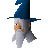

Thormac

| Config name | thormac |
| NPC id | 389 |
| Combat level | hidden |
| Options | Talk-to |
| Wander range | 5 tiles from spawn |
| Defined in | scripts/_unpack/225/all.npc |
Thormac
Nice hat.
Show all 1 spawn on the world map → Open in knowledge graph →
Locations
| Area | Coordinates | Level | Count | Map |
|---|---|---|---|---|
| Sorcerers' Tower | 2702, 3405 | 3 | 1 | view |
Dialogue
ThormacHello I am Thormac the sorcerer.
PlayerDo you need anything?
ThormacNot right now, but thank you for offering.
You do not meet all of the requirements to start the Scorpion Catcher quest.
ThormacHello I am Thormac the sorcerer. I don't suppose you could be of assistance to me?
PlayerWhat do you need assistance with?
ThormacI've lost my pet scorpions. They're lesser Kharid scorpions, a very rare breed.
ThormacI left their cage door open, now I don't know where they've gone.
ThormacThere's three of them, and they're quick little beasties. They're all over RuneScape.
PlayerSo how would I go about catching them then?
ThormacWell you have the scorpion cage I gave you, you can catch them using that.
ThormacWell I have a scorpion cage here which you can use to catch them in.
ThormacIf you go up to the village of Seers, to the North of here, one of them will be able to tell you where the scorpions are now.
PlayerWhat's in it for me?
ThormacWell I suppose I can aid you with my skills as a staff sorcerer. Most battlestaffs around here are pretty puny. I can beef them up for you a bit.
PlayerOk, I will do it then.
PlayerI'm not interested.
ThormacBlast! I suppose I'll have to find someone else then.
PlayerI'm a little busy.
ThormacThank you for rescuing my scorpions.
PlayerThat's ok.
PlayerYou said you'd enchant my battlestaff for me.
ThormacYes, it'll cost you 40,000 coins for the materials needed though. Which sort of staff did you want enchanting?
ThormacHow goes your quest?
PlayerI have retrieved all your scorpions.
ThormacAha, my little scorpions home at last!
PlayerI've not brought all the scorpions with me.
ThormacWell go and fetch them then.
PlayerI've lost my cage.
ThormacOk, here's another cage.
PlayerOh, wait, I don't have space to carry one.
ThormacThen you had better free some space and come back!
ThormacYou're almost as bad at losing things as me.
PlayerI've not caught all the scorpions yet.
ThormacWell remember to go speak to the Seers, North of here, if you need any help.
Referenced in scripts
scripts/areas/area_seers/scripts/thormac.rs2